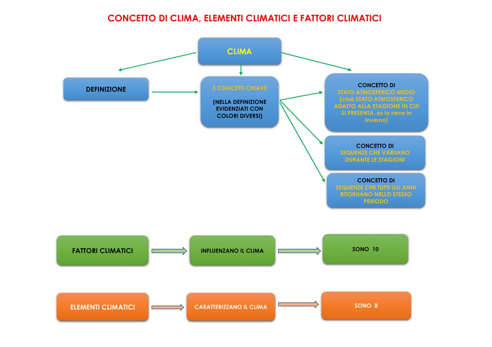
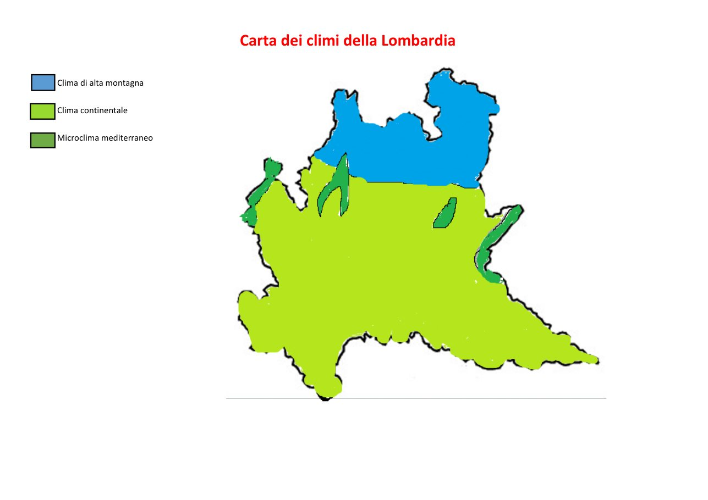

Il clima è il tempo "normale" di un luogo, che cambia con le stagioni e si ripete ogni anno
La definizione della prof ha 3 parole chiave:
Stati atmosferici medi: pioggia, neve, nebbia, sole... adatti alla stagione. La neve a dicembre è normale; la neve ad agosto sarebbe un'eccezione.
Variano con le stagioni: d'estate i temporali, a marzo la pioggia fitta.
Si ripetono ogni anno: la nebbia torna ogni autunno, un anno a ottobre e l'anno dopo a novembre.

Lo schema della prof
🌡️ 2. Elementi e fattori: il trucco
ELEMENTI (8)
FATTORI (10)
Dicono
COM'È il clima
PERCHÉ è così
Sono
cose che si misurano
le cause
Gli 8 elementi (com'è)
Temperatura: quanto fa caldo
Umidità assoluta: quanto vapore d'acqua c'è nell'aria
Umidità relativa: quanto vapore c'è rispetto al massimo possibile (in %)
Pressione atmosferica: il peso dell'aria
Intensità del sole: quanta energia arriva dal sole
Inclinazione dei raggi: se i raggi arrivano dritti o storti
Ore di sole in un giorno
Precipitazioni: quanta pioggia e neve cadono in un anno
🏔️ 3. I 10 fattori (perché)
Altitudine: più sali, più fa freddo
Latitudine: più vai verso nord, più fa freddo
Distanza dal mare (continentalità): lontano dall'acqua inverni più freddi ed estati più calde
Profondità di un lago o mare: più è profondo, più rende il clima mite
Venti: caldi o freddi, umidi o secchi
Correnti marine: calde o fredde
Vegetazione: i boschi rendono il clima più umido
Montagne: possono bloccare i venti
Versanti: quello al sole si chiama solatìo, quello in ombra bacìo
Attività dell'uomo: tagliare i boschi, inquinare con l'anidride carbonica
🎨 Trucco per l'altitudine e la latitudine: salire su una montagna è come andare verso il Polo Nord. In tutti e due i casi fa più freddo.
🗺️ 4. I tre climi della Lombardia

Azzurro = alta montagna · Verde chiaro = continentale · Verde scuro = mediterraneo
La Lombardia ha territori molto diversi, quindi ha tre climi:
🔵 Alta montagna
Dove
le zone più alte delle Alpi
Perché
altitudine
Inverno
lungo, freddissimo, con la neve
Estate
fresca
Piante
a fasce: conifere, pascoli, muschi, ghiacciai
🟢 Continentale
Dove
Pianura Padana e montagne sotto i 1.300–1.400 m
Perché
lontananza dal mare
Inverno
freddo, con la nebbia
Estate
calda e afosa
Piante
coltivazioni in pianura, boschi sulle colline
🌿 Microclima mediterraneo
Dove
sulle rive dei grandi laghi
Perché
laghi profondi
Inverno
mite e corto
Estate
calda, lunga e secca
Piante
ulivi e persino palme
📖 Escursione termica = differenza tra la temperatura più alta e la più bassa. In montagna e in pianura è forte. 📖 Latifoglie = alberi con le foglie larghe (quercia, castagno). Le conifere hanno gli aghi (abete, pino).
🌧️ Nel clima continentale piove 800–1.000 mm all'anno, soprattutto in primavera e autunno.
🗺️ Mappa da tenere in mente
CLIMA
tempo normale · cambia con le stagioni · si ripete
|
________________|________________
| |
8 ELEMENTI (com'e') 10 FATTORI (perche')
temperatura, umidita', altitudine, latitudine,
pressione, sole, pioggia mare, venti, montagne...
|
CLIMI DELLA LOMBARDIA
ALTA MONTAGNA CONTINENTALE MEDITERRANEO
(altitudine) (lontano mare) (laghi profondi)
neve, fresco nebbia, afa mite, ulivi
✅ Prova a rispondere (a voce!)
1. Che differenza c'è tra elementi e fattori del clima?
2. Cosa succede alla temperatura se sali in montagna?
3. Quali sono i tre climi della Lombardia?
4. Perché sulle rive del lago di Garda crescono gli ulivi?
5. Come si chiama il versante di una montagna esposto al sole?
1. gli elementi dicono com'è il clima, i fattori perché è così · 2. diminuisce, fa più freddo · 3. alta montagna, continentale, microclima mediterraneo · 4. perché il lago è profondo e rende il clima mite · 5. solatìo